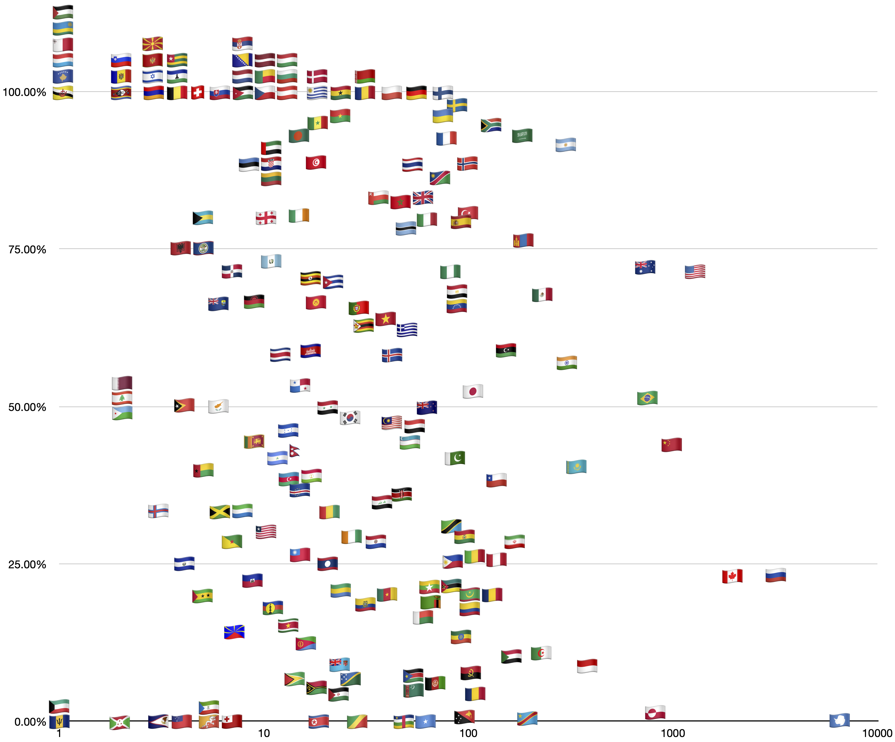

The Degree Confluence Project is a community of adventurers and explorers who have the goal of visiting every point on earth where lines of latitude and longitude meet, either on land or within sight of land. This page explores the percent of points visited in each country as a fraction of the total.
| 69 of 69 (100%) | 🇫🇮 Finland |
| 48 of 48 (100%) | 🇩🇪 Germany |
| 41 of 41 (100%) | 🇵🇱 Poland |
| 29 of 29 (100%) | 🇷🇴 Romania |
| 28 of 28 (100%) | 🇧🇾 Belarus |
| 22 of 22 (100%) | 🇬🇭 Ghana |
| 18 of 18 (100%) | 🇺🇾 Uruguay |
| 17 of 17 (100%) | 🇩🇰 Denmark |
| 12 of 12 (100%) | 🇦🇹 Austria |
| 12 of 12 (100%) | 🇧🇬 Bulgaria |
| 11 of 11 (100%) | 🇭🇺 Hungary |
| 10 of 10 (100%) | 🇨🇿 Czech Republic |
| 9 of 9 (100%) | 🇧🇯 Benin |
| 9 of 9 (100%) | 🇱🇻 Latvia |
| 8 of 8 (100%) | 🇯🇴 Jordan |
| 8 of 8 (100%) | 🇳🇱 Netherlands |
| 7 of 7 (100%) | 🇧🇦 Bosnia and Herzegovina |
| 7 of 7 (100%) | 🇷🇸 Serbia |
| 6 of 6 (100%) | 🇸🇰 Slovakia |
| 5 of 5 (100%) | 🇨🇭 Switzerland |
| 4 of 4 (100%) | 🇧🇪 Belgium |
| 4 of 4 (100%) | 🇱🇸 Lesotho |
| 4 of 4 (100%) | 🇹🇬 Togo |
| 3 of 3 (100%) | 🇦🇲 Armenia |
| 3 of 3 (100%) | 🇳🇱 Dutch Caribbean |
| 3 of 3 (100%) | 🇮🇱 Israel |
| 3 of 3 (100%) | 🇲🇻 Maldives |
| 3 of 3 (100%) | 🇲🇪 Montenegro |
| 3 of 3 (100%) | 🇲🇰 North Macedonia |
| 2 of 2 (100%) | 🇸🇿 Eswatini |
| 2 of 2 (100%) | 🇲🇩 Moldova |
| 2 of 2 (100%) | 🇸🇮 Slovenia |
| 2 of 2 (100%) | 🇹🇹 Trinidad and Tobago |
| 1 of 1 (100%) | 🇦🇬 Antigua and Barbuda |
| 1 of 1 (100%) | 🇧🇲 Bermuda |
| 1 of 1 (100%) | 🇧🇳 Brunei |
| 1 of 1 (100%) | 🇬🇩 Grenada |
| 1 of 1 (100%) | 🇽🇰 Kosovo |
| 1 of 1 (100%) | 🇱🇺 Luxembourg |
| 1 of 1 (100%) | 🇲🇹 Malta |
| 1 of 1 (100%) | 🇾🇹 Mayotte |
| 1 of 1 (100%) | 🇵🇸 Navassa Island |
| 1 of 1 (100%) | 🇷🇼 Rwanda |
| 1 of 1 (100%) | 🇰🇳 Saint Kitts and Nevis |
| 1 of 1 (100%) | 🇱🇨 Saint Lucia |
| 1 of 1 (100%) | 🇻🇨 Saint Vincent and the Grenadines |
| 1 of 1 (100%) | 🇹🇨 Turks and Caicos Islands |
| 1 of 1 (100%) | 🇵🇸 Palestine |
| 88 of 90 (97.8%) | 🇸🇪 Sweden |
| 76 of 79 (96.2%) | 🇺🇦 Ukraine |
| 22 of 23 (95.7%) | 🇧🇫 Burkina Faso |
| 122 of 129 (94.6%) | 🇿🇦 South Africa |
| 16 of 17 (94.1%) | 🇸🇳 Senegal |
| 14 of 15 (93.3%) | 🇧🇩 Bangladesh |
| 168 of 181 (92.8%) | 🇸🇦 Saudi Arabia |
| 72 of 78 (92.3%) | 🇫🇷 France |
| 263 of 288 (91.3%) | 🇦🇷 Argentina |
| 10 of 11 (90.9%) | 🇭🇷 Croatia |
| 10 of 11 (90.9%) | 🇦🇪 United Arab Emirates |
| 9 of 10 (90.0%) | 🇱🇹 Lithuania |
| 16 of 18 (88.9%) | 🇹🇳 Tunisia |
| 8 of 9 (88.9%) | 🇪🇪 Estonia |
| 46 of 52 (88.5%) | 🇹🇭 Thailand |
| 83 of 94 (88.3%) | 🇳🇴 Norway |
| 62 of 72 (86.1%) | 🇳🇦 Namibia |
| 30 of 36 (83.3%) | 🇴🇲 Oman |
| 49 of 59 (83.1%) | 🇬🇧 United Kingdom |
| 38 of 46 (82.6%) | 🇲🇦 Morocco |
| 81 of 100 (81.0%) | 🇹🇷 Turkey |
| 12 of 15 (80.0%) | 🇮🇪 Ireland |
| 8 of 10 (80.0%) | 🇬🇪 Georgia |
| 4 of 5 (80.0%) | 🇧🇸 Bahamas |
| 51 of 64 (79.7%) | 🇮🇹 Italy |
| 73 of 92 (79.3%) | 🇪🇸 Spain |
| 40 of 51 (78.4%) | 🇧🇼 Botswana |
| 141 of 185 (76.2%) | 🇲🇳 Mongolia |
| 3 of 4 (75.0%) | 🇦🇱 Albania |
| 3 of 4 (75.0%) | 🇧🇿 Belize |
| 8 of 11 (72.7%) | 🇬🇹 Guatemala |
| 531 of 737 (72.0%) | 🇦🇺 Australia |
| 914 of 1278 (71.5%) | 🇺🇸 United States |
| 5 of 7 (71.4%) | 🇩🇴 Dominican Republic |
| 57 of 80 (71.3%) | 🇳🇬 Nigeria |
| 12 of 17 (70.6%) | 🇺🇬 Uganda |
| 14 of 20 (70.0%) | 🇨🇺 Cuba |
| 60 of 88 (68.2%) | 🇪🇬 Egypt |
| 153 of 226 (67.7%) | 🇲🇽 Mexico |
| 12 of 18 (66.7%) | 🇰🇬 Kyrgyzstan |
| 6 of 9 (66.7%) | 🇲🇼 Malawi |
| 4 of 6 (66.7%) | 🇸🇭 Saint Helena |
| 56 of 85 (65.9%) | 🇻🇪 Venezuela |
| 19 of 29 (65.5%) | 🇵🇹 Portugal |
| 25 of 39 (64.1%) | 🇻🇳 Vietnam |
| 22 of 35 (62.9%) | 🇿🇼 Zimbabwe |
| 28 of 45 (62.2%) | 🇬🇷 Greece |
| 91 of 154 (59.1%) | 🇱🇾 Libya |
| 10 of 17 (58.8%) | 🇰🇭 Cambodia |
| 7 of 12 (58.3%) | 🇨🇷 Costa Rica |
| 25 of 43 (58.1%) | 🇮🇸 Iceland |
| 170 of 298 (57.0%) | 🇮🇳 India |
| 8 of 15 (53.3%) | 🇵🇦 Panama |
| 56 of 107 (52.3%) | 🇯🇵 Japan |
| 375 of 731 (51.3%) | 🇧🇷 Brazil |
| 32 of 64 (50.0%) | 🇳🇿 New Zealand |
| 10 of 20 (50.0%) | 🇸🇾 Syria |
| 3 of 6 (50.0%) | 🇨🇾 Cyprus |
| 3 of 6 (50.0%) | 🇫🇰 Falkland Islands |
| 2 of 4 (50.0%) | 🇹🇱 Timor-Leste |
| 1 of 2 (50.0%) | 🇩🇯 Djibouti |
| 1 of 2 (50.0%) | 🇬🇵 Guadeloupe |
| 1 of 2 (50.0%) | 🇱🇧 Lebanon |
| 1 of 2 (50.0%) | 🇶🇦 Qatar |
| 12 of 25 (48.0%) | 🇰🇷 South Korea |
| 20 of 42 (47.6%) | 🇲🇾 Malaysia |
| 23 of 49 (46.9%) | 🇾🇪 Yemen |
| 6 of 13 (46.2%) | 🇭🇳 Honduras |
| 4 of 9 (44.4%) | 🇱🇰 Sri Lanka |
| 23 of 52 (44.2%) | 🇺🇿 Uzbekistan |
| 435 of 990 (43.9%) | 🇨🇳 China |
| 6 of 14 (42.9%) | 🇳🇵 Nepal |
| 36 of 86 (41.9%) | 🇵🇰 Pakistan |
| 5 of 12 (41.7%) | 🇳🇮 Nicaragua |
| 134 of 330 (40.6%) | 🇰🇿 Kazakhstan |
| 2 of 5 (40.0%) | 🇬🇼 Guinea-Bissau |
| 52 of 135 (38.5%) | 🇨🇱 Chile |
| 5 of 13 (38.5%) | 🇦🇿 Azerbaijan |
| 5 of 13 (38.5%) | 🇨🇻 Cape Verde |
| 5 of 13 (38.5%) | 🇹🇯 Tajikistan |
| 17 of 47 (36.2%) | 🇰🇪 Kenya |
| 14 of 40 (35.0%) | 🇮🇶 Iraq |
| 7 of 21 (33.3%) | 🇬🇳 Guinea |
| 2 of 6 (33.3%) | 🇯🇲 Jamaica |
| 2 of 6 (33.3%) | 🇸🇱 Sierra Leone |
| 1 of 3 (33.3%) | 🇫🇴 Faroe Islands |
| 25 of 81 (30.9%) | 🇹🇿 Tanzania |
| 3 of 10 (30.0%) | 🇱🇷 Liberia |
| 8 of 27 (29.6%) | 🇨🇮 Côte d'Ivoire |
| 27 of 92 (29.3%) | 🇧🇴 Bolivia |
| 49 of 171 (28.7%) | 🇮🇷 Iran |
| 10 of 35 (28.6%) | 🇵🇾 Paraguay |
| 2 of 7 (28.6%) | 🇬🇫 French Guyana |
| 4 of 15 (26.7%) | 🇹🇼 Taiwan |
| 28 of 107 (26.2%) | 🇲🇱 Mali |
| 32 of 123 (26.0%) | 🇵🇪 Peru |
| 22 of 88 (25.0%) | 🇵🇭 Philippines |
| 5 of 20 (25.0%) | 🇱🇦 Laos |
| 1 of 4 (25.0%) | 🇸🇻 El Salvador |
| 739 of 3198 (23.1%) | 🇷🇺 Russia |
| 459 of 2003 (22.9%) | 🇨🇦 Canada |
| 2 of 9 (22.2%) | 🇭🇹 Haiti |
| 14 of 65 (21.5%) | 🇲🇲 Myanmar |
| 15 of 70 (21.4%) | 🇲🇿 Mozambique |
| 5 of 24 (20.8%) | 🇬🇦 Gabon |
| 19 of 93 (20.4%) | 🇲🇷 Mauritania |
| 20 of 99 (20.2%) | 🇳🇪 Niger |
| 13 of 65 (20.0%) | 🇿🇲 Zambia |
| 8 of 40 (20.0%) | 🇨🇲 Cameroon |
| 1 of 5 (20.0%) | 🇸🇹 São Tomé and Príncipe |
| 21 of 108 (19.4%) | 🇨🇴 Colombia |
| 6 of 32 (18.8%) | 🇪🇨 Equador |
| 2 of 11 (18.2%) | 🇳🇨 New Caledonia |
| 10 of 60 (16.7%) | 🇲🇬 Madagascar |
| 2 of 13 (15.4%) | 🇸🇷 Suriname |
| 1 of 7 (14.3%) | 🇷🇪 Réunion |
| 12 of 91 (13.2%) | 🇪🇹 Ethiopia |
| 2 of 16 (12.5%) | 🇪🇷 Eritrea |
| 24 of 221 (10.9%) | 🇩🇿 Algeria |
| 17 of 163 (10.4%) | 🇸🇩 Sudan |
| 34 of 382 (8.90%) | 🇮🇩 Indonesia |
| 2 of 23 (8.70%) | 🇫🇯 Fiji |
| 8 of 103 (7.77%) | 🇦🇴 Angola |
| 4 of 54 (7.41%) | 🇸🇸 South Sudan |
| 2 of 28 (7.14%) | 🇸🇧 Solomon Islands |
| 1 of 15 (6.67%) | 🇬🇾 Guyana |
| 4 of 64 (6.25%) | 🇦🇫 Afghanistan |
| 3 of 54 (5.56%) | 🇹🇲 Turkmenistan |
| 1 of 19 (5.26%) | 🇻🇺 Vanuatu |
| 1 of 21 (4.76%) | 🇪🇭 Western Sahara |
| 5 of 110 (4.55%) | 🇹🇩 Chad |
| 9 of 815 (1.10%) | 🇬🇱 Greenland |
| 1 of 94 (1.06%) | 🇵🇬 Papua New Guinea |
| 1 of 189 (0.53%) | 🇨🇩 Congo-Kinshasa |
| 13 of 6714 (0.19%) | 🇦🇶 Antarctica |
| 0 of 63 (0%) | 🇸🇴 Somalia |
| 0 of 49 (0%) | 🇨🇫 Central African Republic |
| 0 of 28 (0%) | 🇨🇬 Congo-Brazzaville |
| 0 of 20 (0%) | 🇬🇸 South Georgia and South Sandwich Is |
| 0 of 18 (0%) | 🇰🇵 North Korea |
| 0 of 15 (0%) | 🇵🇫 French Polynesia |
| 0 of 13 (0%) | 🇹🇫 French Southern Territories |
| 0 of 7 (0%) | 🇹🇴 Tonga |
| 0 of 6 (0%) | 🇧🇹 Bhutan |
| 0 of 6 (0%) | 🇰🇲 Comoros |
| 0 of 5 (0%) | 🇬🇶 Equatorial Guinea |
| 0 of 5 (0%) | 🇲🇵 Northern Mariana Islands |
| 0 of 4 (0%) | 🇨🇰 Cook Islands |
| 0 of 4 (0%) | 🇼🇸 Samoa |
| 0 of 4 (0%) | 🇸🇨 Seychelles |
| 0 of 3 (0%) | 🇦🇸 American Samoa |
| 0 of 2 (0%) | 🇧🇮 Burundi |
| 0 of 2 (0%) | 🇮🇲 Isle of Man |
| 0 of 2 (0%) | 🇰🇮 Kiribati |
| 0 of 2 (0%) | 🇲🇺 Mauritius |
| 0 of 2 (0%) | 🇫🇲 Micronesia |
| 0 of 2 (0%) | 🇼🇫 Wallis and Futuna |
| 0 of 1 (0%) | 🇧🇧 Barbados |
| 0 of 1 (0%) | 🇩🇲 Dominica |
| 0 of 1 (0%) | 🇬🇺 Guam |
| 0 of 1 (0%) | 🇰🇼 Kuwait |
| 0 of 1 (0%) | 🇲🇭 Marshall Islands |
| 0 of 1 (0%) | 🇲🇶 Martinique |
| 0 of 1 (0%) | 🇳🇺 Niue |
| 0 of 1 (0%) | 🇳🇫 Norfolk Island |
| 0 of 1 (0%) | 🇵🇳 Pitcairn Islands |
| 0 of 1 (0%) | 🇵🇲 Saint Pierre and Miquelon |
| 0 of 0 (0%) | 🇦🇩 Andorra |
| 0 of 0 (0%) | 🇦🇮 Anguilla |
| 0 of 0 (0%) | 🇦🇼 Aruba |
| 0 of 0 (0%) | 🇧🇭 Bahrain |
| 0 of 0 (0%) | 🇻🇬 British Virgin Islands |
| 0 of 0 (0%) | 🇨🇽 Christmas Island |
| 0 of 0 (0%) | 🇬🇲 Gambia |
| 0 of 0 (0%) | 🇬🇮 Gibraltar |
| 0 of 0 (0%) | 🇯🇪 Jersey |
| 0 of 0 (0%) | 🇱🇮 Liechtenstein |
| 0 of 0 (0%) | 🇲🇨 Monaco |
| 0 of 0 (0%) | 🇲🇸 Montserrat |
| 0 of 0 (0%) | 🇳🇷 Nauru |
| 0 of 0 (0%) | 🇵🇼 Palau |
| 0 of 0 (0%) | 🇸🇲 San Marino |
| 0 of 0 (0%) | 🇸🇬 Singapore |
| 0 of 0 (0%) | 🇹🇻 Tuvalu |
| 0 of 18 (0%) | 🇰🇵 North Korea |
| 0 of 15 (0%) | 🇵🇫 French Polynesia |
| 0 of 13 (0%) | 🇹🇫 French Southern Territories |
| 0 of 7 (0%) | 🇹🇴 Tonga |
| 0 of 6 (0%) | 🇧🇹 Bhutan |
| 0 of 6 (0%) | 🇰🇲 Comoros |
| 0 of 5 (0%) | 🇬🇶 Equatorial Guinea |
| 0 of 5 (0%) | 🇲🇵 Northern Mariana Islands |
| 0 of 4 (0%) | 🇨🇰 Cook Islands |
| 0 of 4 (0%) | 🇼🇸 Samoa |
| 0 of 4 (0%) | 🇸🇨 Seychelles |
| 0 of 3 (0%) | 🇦🇸 American Samoa |
| 0 of 2 (0%) | 🇧🇮 Burundi |
| 0 of 2 (0%) | 🇮🇲 Isle of Man |
| 0 of 2 (0%) | 🇰🇮 Kiribati |
| 0 of 2 (0%) | 🇲🇺 Mauritius |
| 0 of 2 (0%) | 🇫🇲 Micronesia |
| 0 of 2 (0%) | 🇼🇫 Wallis and Futuna |
| 0 of 1 (0%) | 🇧🇧 Barbados |
| 0 of 1 (0%) | 🇩🇲 Dominica |
| 0 of 1 (0%) | 🇬🇺 Guam |
| 0 of 1 (0%) | 🇰🇼 Kuwait |
| 0 of 1 (0%) | 🇲🇭 Marshall Islands |
| 0 of 1 (0%) | 🇲🇶 Martinique |
| 0 of 1 (0%) | 🇳🇺 Niue |
| 0 of 1 (0%) | 🇳🇫 Norfolk Island |
| 0 of 1 (0%) | 🇵🇳 Pitcairn Islands |
| 0 of 1 (0%) | 🇵🇲 Saint Pierre and Miquelon |
| 0 of 0 (0%) | 🇦🇩 Andorra |
| 0 of 0 (0%) | 🇦🇮 Anguilla |
| 0 of 0 (0%) | 🇦🇼 Aruba |
| 0 of 0 (0%) | 🇧🇭 Bahrain |
| 0 of 0 (0%) | 🇻🇬 British Virgin Islands |
| 0 of 0 (0%) | 🇨🇽 Christmas Island |
| 0 of 0 (0%) | 🇬🇲 Gambia |
| 0 of 0 (0%) | 🇬🇮 Gibraltar |
| 0 of 0 (0%) | 🇯🇪 Jersey |
| 0 of 0 (0%) | 🇱🇮 Liechtenstein |
| 0 of 0 (0%) | 🇲🇨 Monaco |
| 0 of 0 (0%) | 🇲🇸 Montserrat |
| 0 of 0 (0%) | 🇳🇷 Nauru |
| 0 of 0 (0%) | 🇵🇼 Palau |
| 0 of 0 (0%) | 🇸🇲 San Marino |
| 0 of 0 (0%) | 🇸🇬 Singapore |
| 0 of 0 (0%) | 🇹🇻 Tuvalu |